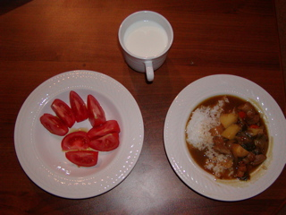
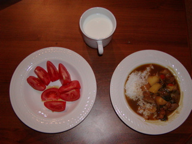
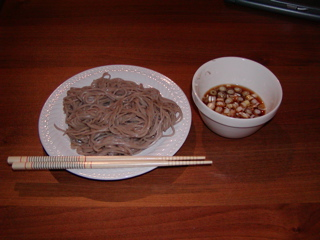
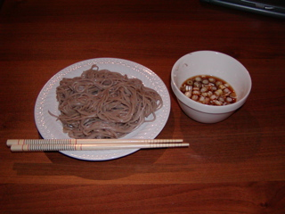

そば改善要望
をいくらか頂いた。
こちらのサイトでは横長のレイアウトを試してるみたい。折り返しが少なくて編集しやすそう！
>・レイアウトを選べるように
他にも横長が良いという要望を頂いているので切り替えられるようにしますね。
>・ベースのHTMLを選択できるようにする
>→HTML,XHTML,及び各バージョンのテンプレを作っておいて、リスト等から選べると便利そう
Wiki 的なアイディアでしょうか？
ページのサーバへの保存、新規ページ起こし、などの機能が前提となるのかな？
>・デザイン
>→もっと使いやすくなるはず
ごもっとも。そのサイトでしか使えないのであれば URL入力エリアは "http://ホスト名/" を省いてしまって短くしちゃってもいいかも。そすればいちいちツールバーを独立したフレームにせずエディタエリアと統合してもよさそうですね。
まだボタンとか設定用のチェックボックスとか増えるかもしれないのでその場その場で柔軟にやっていきます。
こちらのサイトでは横長のレイアウトを試してるみたい。折り返しが少なくて編集しやすそう！
>・レイアウトを選べるように
他にも横長が良いという要望を頂いているので切り替えられるようにしますね。
>・ベースのHTMLを選択できるようにする
>→HTML,XHTML,及び各バージョンのテンプレを作っておいて、リスト等から選べると便利そう
Wiki 的なアイディアでしょうか？
ページのサーバへの保存、新規ページ起こし、などの機能が前提となるのかな？
>・デザイン
>→もっと使いやすくなるはず
ごもっとも。そのサイトでしか使えないのであれば URL入力エリアは "http://ホスト名/" を省いてしまって短くしちゃってもいいかも。そすればいちいちツールバーを独立したフレームにせずエディタエリアと統合してもよさそうですね。
まだボタンとか設定用のチェックボックスとか増えるかもしれないのでその場その場で柔軟にやっていきます。
そば1.1リリース
いくつかのフィードバックと、未実装だったアイディアの一部を実装。
とりあえず実用度が増したと思う。
->そば1.1
追加した内容:
・Sobanizeブックマークレットの追加
サイトをブラウズ中任意のページをSobanize!可能。
・URL入力エリアの追加
好きなページをそばから開ける。
・favicon.ico-アイコンの追加
「蕎」のアイコン。
・保存時に4kbを超えていると警告が出るようにした
トリミングされて大事なところが消えてしまった！ってことのないように。
・ダウンロードして好きなサイトへ展開可能に by kazさん
ファイルを置くだけで yusuke.homeip.net 以外でも使えます。簡単。
・T字型フレームに変更 by ffさん
まだ UI のチューニングは必要そうだけど。
・エキスとエリアの自動フィット by danny さん
編集エリアを広くしたり、狭くしたり。自由自在。
次回見送り(優先順):
・タイプ毎にリフレッシュの最適化
素早くタイプしているときは１タイプ毎にリフレッシュする必要ないので、１〜２秒タイプが収まったときだけリフレッシュすれば良いですね。Firefoxでも実用的になるでしょう。
あと、カーソルの移動でもリフレッシュしているので変更がなければリフレッシュは行わないようにする必要もあり。
・CSSの編集機能 by 橘子さん
早く欲しいですね。とりあえず技術的なめどは立ちました。
WikiやBlogが普及しているので今時htmlよりもCSS編集のほうが重要だし。
・4kb以上の保存機能（サーバへFTPしなくても良い？） by 橘子さん
サーバに保存するとなるとセキュリティ面を考えないといけない。
・テキストエリアの検索、置換など簡単なエディタサポート機能 by Joshさん
SafariだとUndoもできないので現状はちと不便。
・サーバ保存＆自動リフレッシュ
編集過程をサーバ側で保存しておき、編集している以外のブラウザで編集中のhtmlを確認できる。
あと、５秒とか10秒置きに自動的にリフレッシュするようmetaタグを自動的に挿入することでいちいちリロードせずに確認できる機能。
ブラウザ切り替え->リロード->確認、って手順がいらなくなるのでブラウザ毎のチューニングを効率的に行える。
・Opera7.x 対応。
XMLHttpRequestがないので・・・うーん。
とりあえず実用度が増したと思う。
->そば1.1
追加した内容:
・Sobanizeブックマークレットの追加
サイトをブラウズ中任意のページをSobanize!可能。
・URL入力エリアの追加
好きなページをそばから開ける。
・favicon.ico-アイコンの追加
「蕎」のアイコン。
・保存時に4kbを超えていると警告が出るようにした
トリミングされて大事なところが消えてしまった！ってことのないように。
・ダウンロードして好きなサイトへ展開可能に by kazさん
ファイルを置くだけで yusuke.homeip.net 以外でも使えます。簡単。
・T字型フレームに変更 by ffさん
まだ UI のチューニングは必要そうだけど。
・エキスとエリアの自動フィット by danny さん
編集エリアを広くしたり、狭くしたり。自由自在。
次回見送り(優先順):
・タイプ毎にリフレッシュの最適化
素早くタイプしているときは１タイプ毎にリフレッシュする必要ないので、１〜２秒タイプが収まったときだけリフレッシュすれば良いですね。Firefoxでも実用的になるでしょう。
あと、カーソルの移動でもリフレッシュしているので変更がなければリフレッシュは行わないようにする必要もあり。
・CSSの編集機能 by 橘子さん
早く欲しいですね。とりあえず技術的なめどは立ちました。
WikiやBlogが普及しているので今時htmlよりもCSS編集のほうが重要だし。
・4kb以上の保存機能（サーバへFTPしなくても良い？） by 橘子さん
サーバに保存するとなるとセキュリティ面を考えないといけない。
・テキストエリアの検索、置換など簡単なエディタサポート機能 by Joshさん
SafariだとUndoもできないので現状はちと不便。
・サーバ保存＆自動リフレッシュ
編集過程をサーバ側で保存しておき、編集している以外のブラウザで編集中のhtmlを確認できる。
あと、５秒とか10秒置きに自動的にリフレッシュするようmetaタグを自動的に挿入することでいちいちリロードせずに確認できる機能。
ブラウザ切り替え->リロード->確認、って手順がいらなくなるのでブラウザ毎のチューニングを効率的に行える。
・Opera7.x 対応。
XMLHttpRequestがないので・・・うーん。
そば リリース
HTMLやCSSを面倒くさい。
だってソースコードからはどんな風にレンダリングされるかわからないから。
慣れればだいたいイメージできるようになる。でもタグの閉じ忘れとかは表示してみないとわからない。
Dreamweaver とかのツールを使えばだいたい WYSIWYG で表示される。でも実際に使うブラウザとレンダリングエンジンが違うのでちょっと雰囲気が異なる。JavaScriptのテストはできない（と思う)。
JavaScriptのテストなんて[保存->アプリケーションの切り替え->リロード->実行]とめんどくさすぎる。
html エディタはブラウザで作るのが一番良い。と思う。
というわけでそばを作った。なんでそば？とか考えずに召し上がれ。
だってソースコードからはどんな風にレンダリングされるかわからないから。
慣れればだいたいイメージできるようになる。でもタグの閉じ忘れとかは表示してみないとわからない。
Dreamweaver とかのツールを使えばだいたい WYSIWYG で表示される。でも実際に使うブラウザとレンダリングエンジンが違うのでちょっと雰囲気が異なる。JavaScriptのテストはできない（と思う)。
JavaScriptのテストなんて[保存->アプリケーションの切り替え->リロード->実行]とめんどくさすぎる。
html エディタはブラウザで作るのが一番良い。と思う。
というわけでそばを作った。なんでそば？とか考えずに召し上がれ。
とりあえず多カ国語化
Options All MultiViews
とかすればブラウザに設定されてる言語に対応したコンテンツを配信してくれるらしい。パフォーマンスはやや劣るとのこと。Apache って便利ね。
SF MOMAへ
アパートのすぐそばにある SF MOMA へ行った。
今はコミックタッチのアートで有名なリキテンシュタインの作品も展示中。
まぁ、比較的わかりやすいのからなにこれ？なものまで。
ちょっとゲージツしたくなった。
今はコミックタッチのアートで有名なリキテンシュタインの作品も展示中。
まぁ、比較的わかりやすいのからなにこれ？なものまで。
ちょっとゲージツしたくなった。
BEA セキュリティアドバイザリ日本語版リリース
日本のWebLoigc/Tuxedoユーザ、少し幸せ。
・[dev2dev Home > リソース > セキュリティアドバイザリ]
http://www.beasys.co.jp/dev2dev/resourcelibrary/advisoriesnotifications/index.html
・[dev2dev Home > リソース > セキュリティアドバイザリ]
http://www.beasys.co.jp/dev2dev/resourcelibrary/advisoriesnotifications/index.html
just shuffle them!
今日は Macworld Expo の基調講演。
残念ながらAppleのblogソリューションは発表されなかったけどわくわくさせてくれる製品、ソフトが目白押しだ。
新しくなった iPhoto は使いやすそう。
mac mini は小さくてかわいい。
iPod shuffle は普通のUSBメモリより安いという挑戦的な値付け。
ダウンタウンの AppleStore にあるというので衝動買いしてみようかと仕事後見に行ってみた。
市内どこを向いても見える iPod shuffle の広告。午前中までは普通の iPod の広告だった
残念ながらAppleのblogソリューションは発表されなかったけどわくわくさせてくれる製品、ソフトが目白押しだ。
新しくなった iPhoto は使いやすそう。
mac mini は小さくてかわいい。
iPod shuffle は普通のUSBメモリより安いという挑戦的な値付け。
ダウンタウンの AppleStore にあるというので衝動買いしてみようかと仕事後見に行ってみた。
{kind=link}
市内どこを向いても見える iPod shuffle の広告。午前中までは普通の iPod の広告だった
今日はカレー
を作ることにした。なんか会社ではインド人みんな食べてるし。
近所のスーパーではいろんな種類の肉が売られているんだけれども日本みたいに200g、300gとかいう単位でパックになってるわけじゃない。
注文して切り分けてもらわないといけないのでちょっと今までびびってた。
ちょいと勇気を出して "は、はーふぱうんどおぶぽーくしょるだー、ぷりーず"で通じた。一歩前進かな？
「0.5ポンドかよ！？（すくなくね？）」って聞かれたけどその通り。日本人が食べる量なんてそんなもんです。

豚肉、タマネギ、ほうれん草、人参、じゃがいものカレー。トマトはオリーブオイルと塩で食べた。
近所のスーパーではいろんな種類の肉が売られているんだけれども日本みたいに200g、300gとかいう単位でパックになってるわけじゃない。
注文して切り分けてもらわないといけないのでちょっと今までびびってた。
ちょいと勇気を出して "は、はーふぱうんどおぶぽーくしょるだー、ぷりーず"で通じた。一歩前進かな？
「0.5ポンドかよ！？（すくなくね？）」って聞かれたけどその通り。日本人が食べる量なんてそんなもんです。

{kind=link}
豚肉、タマネギ、ほうれん草、人参、じゃがいものカレー。トマトはオリーブオイルと塩で食べた。
来週はMacworld
家のすぐ隣はMoscone Center。東京ビッグサイトや幕張みたいに展示会をやるところ。
年初はMacworld Conference & Expoをやるのが恒例で新製品が良く発表される。

市内でよく見かける広告
新しいハードウェアの発表も楽しそうだけども.mac/iPhotoと連携したblogソフト/サービスなんかが出ないかと期待。
年初はMacworld Conference & Expoをやるのが恒例で新製品が良く発表される。

市内でよく見かける広告
新しいハードウェアの発表も楽しそうだけども.mac/iPhotoと連携したblogソフト/サービスなんかが出ないかと期待。
トレーニング日誌
当たり前だけどトレッドミルの距離はマイル表示だった。
今日はマンションにあるスポーツセンター（といっても結構シンプルなとこ）でラン 30分間。2.6マイル。
自室で腕立て伏せ20x2、腹筋20x2。
最近サボリ気味だったのでまずは軽く。
ウェイトトレーニングができないのでやっぱジムに入会したい。
今日はマンションにあるスポーツセンター（といっても結構シンプルなとこ）でラン 30分間。2.6マイル。
自室で腕立て伏せ20x2、腹筋20x2。
最近サボリ気味だったのでまずは軽く。
ウェイトトレーニングができないのでやっぱジムに入会したい。
射初めへ
日本の正月は相当寒い。
学生の時は実際の練習内容よりも「今年も練習をするぞ、うまくなるぞ！」という気合いを確かめにいくようなものだったかもしれない。
サンフランシスコは違う。
結構暖かい-たぶん10度以上はある-ので十分練習できる。
しかも近所のアーチェリー場は年中無料開放なので元旦からうてる！

一射一射着実に
学生の時は実際の練習内容よりも「今年も練習をするぞ、うまくなるぞ！」という気合いを確かめにいくようなものだったかもしれない。
サンフランシスコは違う。
結構暖かい-たぶん10度以上はある-ので十分練習できる。
しかも近所のアーチェリー場は年中無料開放なので元旦からうてる！

一射一射着実に
It's STILL new year's eve.
今年は一人でちょっと寂しい年越し。でもNiijyaのおかげでちょっと雰囲気が出た。

昨日Nijiyaで買った年越しそば
ユニオンスクエアではカウントダウンイベントがあるっぽいけどなんだか天気が悪いので家でテレビを見てることに。
テレビでは既にパリやロンドン、ニューヨークの年越し風景が流れててなんか妙な感じ。
タイムズスクエアではかなり厳重な警戒態勢が敷かれているらしい。来年はも少し平和になるといいけど・・・・。

{kind=link}
昨日Nijiyaで買った年越しそば
ユニオンスクエアではカウントダウンイベントがあるっぽいけどなんだか天気が悪いので家でテレビを見てることに。
テレビでは既にパリやロンドン、ニューヨークの年越し風景が流れててなんか妙な感じ。
タイムズスクエアではかなり厳重な警戒態勢が敷かれているらしい。来年はも少し平和になるといいけど・・・・。